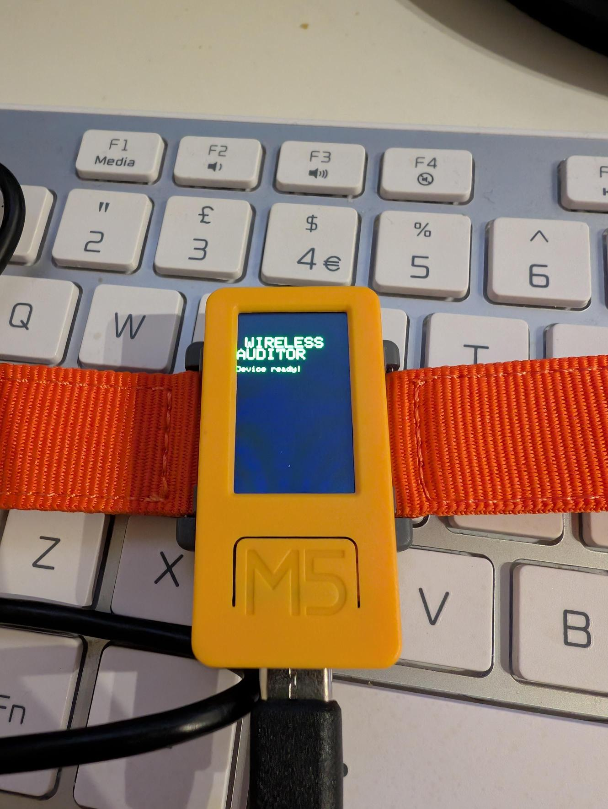
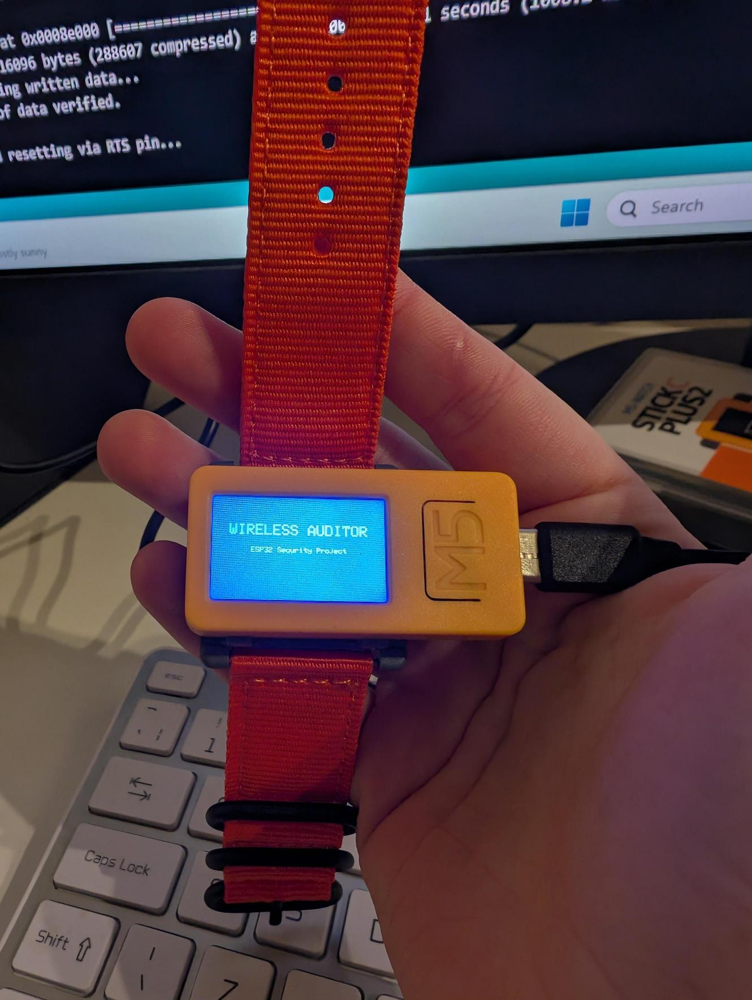
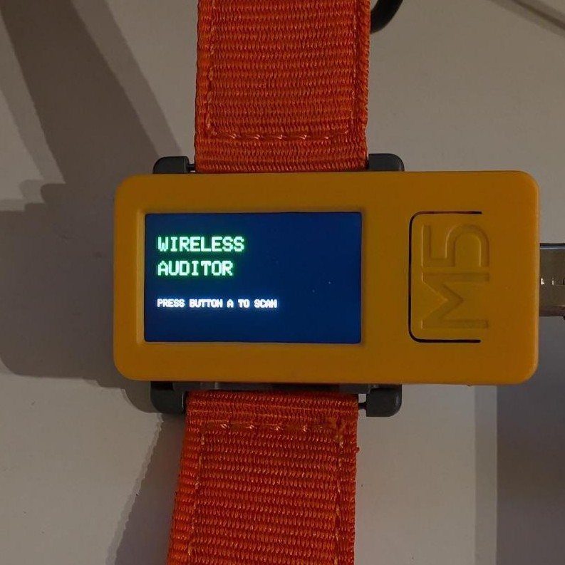
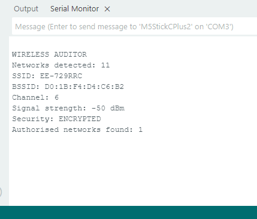

01 — CHECKING FUNCTIONALITY
Connecting the M5 with my PC
I recently participated in an ethical hacking masterclass at the University of Cumbria, where we used ESP32 devices to create a wardriving tool. I wanted to build upon what I had learned by developing my own similar project.
The device uses passive WiFi scanning to discover nearby wireless networks without connecting to them or attempting authentication. It filters the results to identify a specific authorised test network, allowing its advertised network characteristics to be examined.
I downloaded the M5Stack libraries onto Arduino IDE and connected the M5StickCPlus2 to my PC via USB. I then uploaded the example code for the device, which allowed me to check that it was functioning correctly.
I had never used C++ before, but found it relatively self-explanatory and easy to follow. I was able to understand the code and make small changes to it.

The only issue I had was that the device did not display the text aligned to the centre of the screen. It was also in portrait rather than landscape orientation, which made it difficult to read. I was able to fix this by changing the display orientation in the code.

02 — BASIC WIFI SCANNING
Once I knew the device was functioning, I moved on to creating a basic WiFi scanning program. Because I was new to C++ and ESP32 development, I didn't understand what some elements meant, such as "Baud rate" and "#include", so I had to research these terms to understand what they meant and how they worked.

Initially, I did not synchronise the baud rate between the device and the serial monitor, which meant that the text on the display was not updating correctly. I fixed this by changing the baud rate in the code to match that of the serial monitor.
This outputs the number of networks found, the SSID, BSSID, channel, signal strength, number of authorised networks and whether each network is encrypted or open.

I also recorded the scanning process to demonstrate how the device identifies and displays nearby networks.
03 — DETECTING PROTOCOLS
Detecting the protocol of the network
I added a switch statement, which is essentially a more efficient way of using multiple if statements, to select the encryption case. I also created an encryption variable, which converts the result into readable text ready to be printed.
This code was compiled before being uploaded to the device, which then allowed me to see the protocol of the network in the serial monitor.

04 — M5 DISPLAY
Creating the Display Interface
With the main functionality of the device complete, I moved on to creating a display interface for the M5StickCPlus2. This involved creating four pages to display the information, which could be navigated using the buttons on the device.